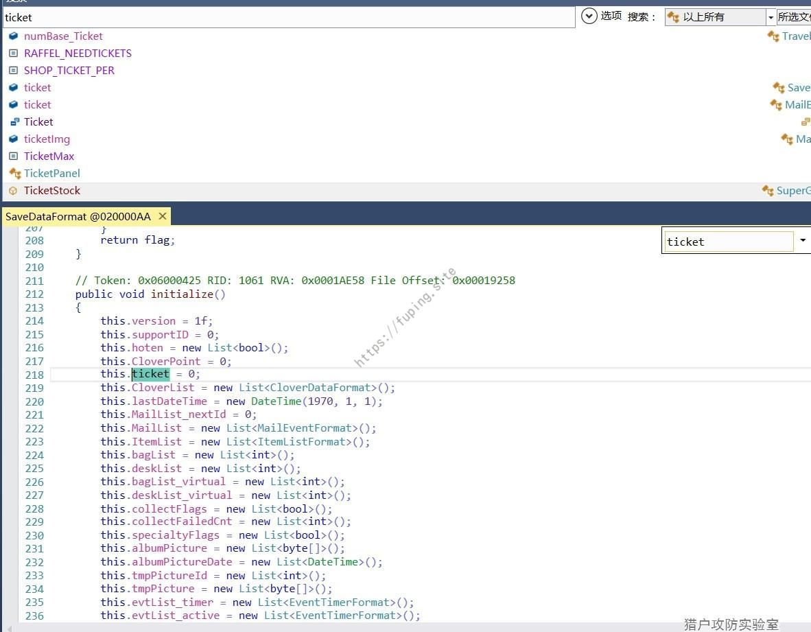
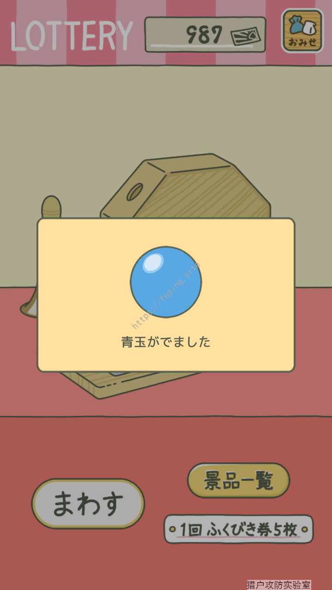
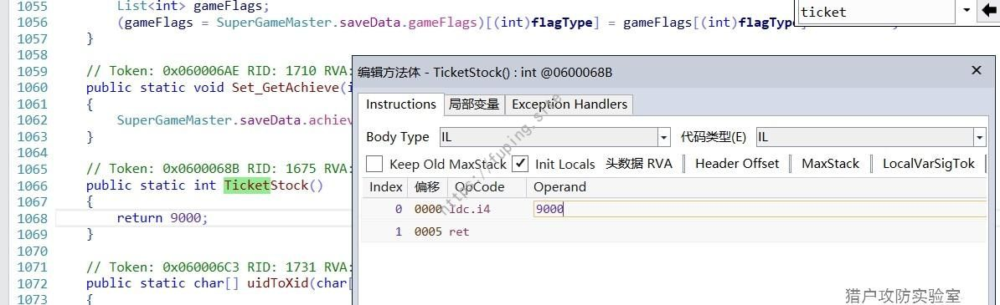
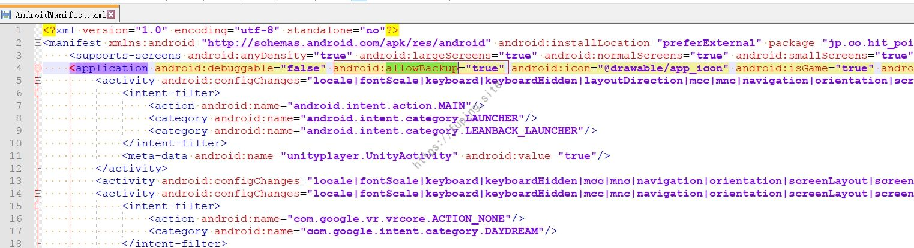
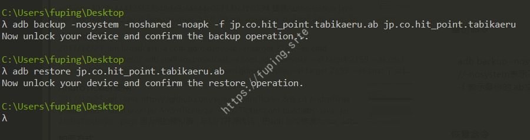

Unity3d类安卓游戏逆向分析初探
0x01 前言
最近一款养蛙的游戏非常火，但是语言是日文的。下载了一个汉化的，结果广告一大堆。反编译之后查看是Unity游戏，之前没接触过，就想着跟着看一下。关于这类的破解，可以在52pojie上进行搜索。有很多类似的案例。
这里主要采用的工具为dnSpy，dnSpy 是一款针对 .NET 程序的逆向工程工具。反编译和打包采用的是apktool，当然也可以直接用改之理等工具。
0x02 修改数据
下载app后重命名为zip文件，发现存在assets\bin\Data\Managed目录，那么该游戏应该为Unity游戏。
那么需要分析的文件就是就是Assembly-CSharp.dll。
首先修改一下抽奖券的数量。安装游戏后，找到抽奖的地方。抽奖的时候提示券不足。
使用dnSpy打开Assembly-CSharp.dll文件，然后搜索字符串”足”，可以发现有两个，打开后发现是第一个。
由此可以猜测TicketStock代表抽奖券库存。
ticket表示抽奖券数量。
当页查找ticket，发现有一个initialize方法进行初始化。我们将此处的数量改为1000.

快捷键Ctrl+E编辑IL指令。找到ticket变量后，将ldc.i4.0改为ldc.i4，然后将数值改为1000.
确定后，发现ticket数值已经改变。
重新打包APP后，进行安装。
打开抽奖界面发现数量已经改变为1000。

这样虽然达到了修改抽奖券的效果，但数量再大，总会被抽完的。那就换种方法，比如说抽奖的时候增加奖券，或者奖券一直不变。这里采用奖券数量固定的方法，使其不会变动。
1 | if (SuperGameMaster.TicketStock() < 5) |
已知抽奖的时候奖券是从SuperGameMaster.TicketStock()获取的，找到该方法。令其返回值为固定的数值。
右键编辑IL指令。
将其值修改为9000.

然后保存后打包并重新安装。
此时无论抽多少次，奖券都不再变化。
另一个就是修改三叶草的数量了。三叶草是该游戏中流行的货币，买东西都是需要该物品。同理找到CloverPointStock()方法。
将其返回值修改为8888。之后就可以随便买买买了，三叶草的数量也不会发生变化了。
0x03 汉化
然后就是进行汉化了。汉化的方法和上面的类似。首先搜索需要修改的文字。例如给小青蛙起名字的时候。直接进行字符串搜索。
然后修改为对应的中文就行了。
进入游戏查看。
修改其他处的文字也是这样操作即可。当然这种修改方法比较慢，还有另外一种，直接将他人汉化过的dll文件复制进来，可以快速达到汉化的目的，也没有广告的烦恼了。
0x04 其他修改
按照以上方法修改的时候，每次都需要重新玩，还要经过”新手教学阶段”。我们可以使用安卓的备份功能，进行备份。然后重新安装app后直接恢复备份即可。
首先需要在AndroidManifest.xml文件中增加android:allowBackup="true"。

这样就可以使用备份命令了。
命令如下：
1 | adb backup -nosystem -noshared -noapk -f jp.co.hit_point.tabikaeru.ab jp.co.hit_point.tabikaeru |

手机备份操作界面：
恢复命令比较简单
1 | adb restore jp.co.hit_point.tabikaeru.ab |
手机备份还原界面
然后就可以进行进度的保存和恢复了。就省去了每次都要进行”新手教学”的烦恼。
0x05 总结
这个游戏修改起来比较简单，首先判断为该游戏为Unity3d。然后使用dnSpy来对Assembly-CSharp.dll文件进行修改。根据特定的字符串找到需要修改的位置，修改后进行打包签名后即可。
原版APK
修改后的APK（修改了抽奖券、三叶草和部分汉化）
0x06 参考
[1]https://www.52pojie.cn/search.php?mod=forum&searchid=23262&orderby=lastpost&ascdesc=desc&searchsubmit=yes&kw=unity3d
[2] https://www.52pojie.cn/thread-647612-1-1.html